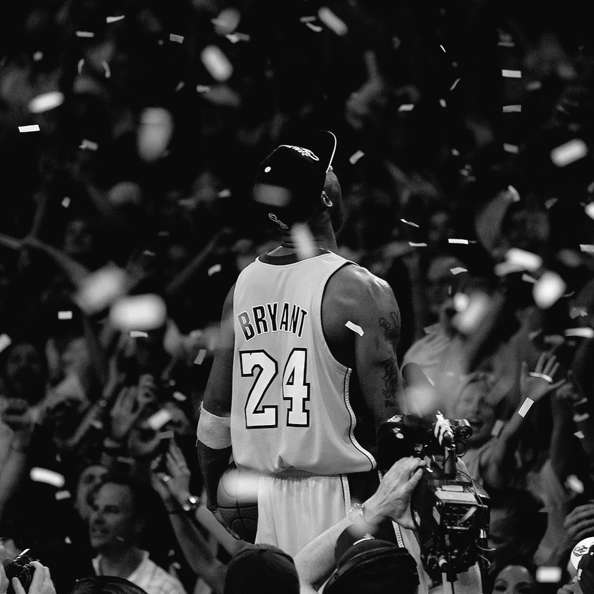

Kobe Bryant
Em memória do melhor e mais dedicado jogador da história do basquete.

Foto tirada em 2008 - após Kobe finalizar seu treino
Linha do tempo
1993
1996
2000
2006
2010
2016
Passe o mouse sobre um ano
Referência bibliográfica